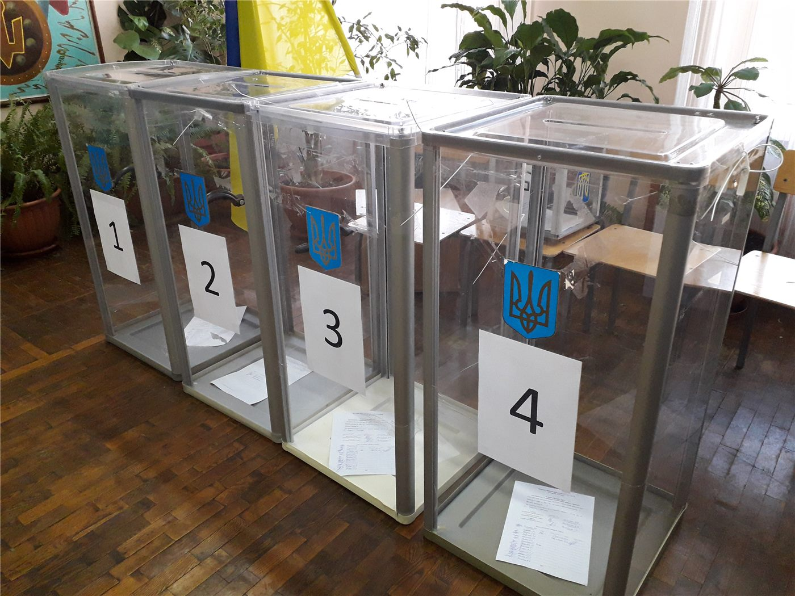

민주당 대표, 전당대회 여론조사 관련 의혹 유튜버 긴급 감찰 지시
더불어민주당 김민석 대표가 8·17 전당대회 기간 당대표 후보 선호도 여론조사와 관련해 의혹이 제기된 유튜브 채널 운영자에 대해 윤리감찰단의 긴급 감찰을 지시했다고 30일 밝혔다.
손승종 기자 · 2026.09.01
橋한국

더불어민주당 김민석 대표는 8월 30일 사회관계망서비스에 글을 올려, 전당대회 여론조사와 관련해 시비가 제기된 유튜브 채널 운영자에 대해 긴급 감찰을 지시했다고 밝혔다.
광고 문의 · 300×250김 대표는 해당 인물이 당원임을 확인했으며, 윤리감찰단에 긴급 감찰을 거쳐 긴급 징계의 필요 여부를 보고하도록 특별 지시를 내렸다고 설명했다.
제기된 의혹의 내용
논란의 대상이 된 것은 전당대회 기간 진행된 국민여론조사다. 당대표 선거 결과에 30퍼센트가 반영되는 이 조사에서, 해당 채널이 방송을 통해 시청자에게 지역이나 연령을 실제와 다르게 응답하도록 유도했다는 의혹이 제기됐다.
당사자는 자신이 앞에서 지휘한 것 외에 관여한 바가 없다는 취지로 반박한 것으로 전해졌다. 사실관계는 감찰 결과가 나와야 확인된다.
여론조사 표본과 가중치
정당 경선의 국민여론조사는 통상 지역과 연령대별로 표본을 배분하고 가중치를 적용한다. 응답자가 속성을 다르게 답하면 특정 집단의 가중치가 왜곡될 수 있다는 것이 조사방법론상의 일반적 설명이다.
다만 그 왜곡이 실제 결과를 바꿀 만한 규모였는지는 별개의 문제이며, 이를 판단하려면 조사기관의 원자료 검토가 필요하다.
이후 절차
당 윤리감찰단의 감찰 결과에 따라 징계 절차 개시 여부가 정해진다. 당규상 긴급 징계는 사안의 중대성이 인정될 때 적용된다.
본지는 감찰이 진행 중인 사안에 대해 결론을 예단하지 않으며, 확인된 사실인 감찰 지시와 제기된 의혹의 내용만을 전한다.
출처·참고 (사실 확인용 — 본문은 직접 재작성)
· 경향신문 2026-08-30
· 이데일리 2026-08-30
· 서울경제 2026-08-30
· 경향신문 2026-08-30
· 이데일리 2026-08-30
· 서울경제 2026-08-30